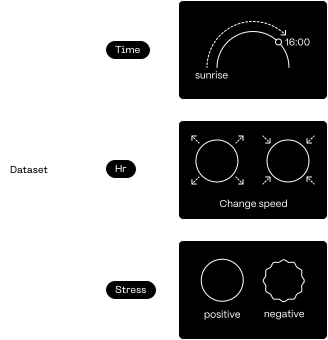

Emotion recognition using heart rate data from a wearable smartwatch.

—Abstract
Our data are never just numbers. They speak. Even the intangible, abstract and private can be brought to
light through algorithmic mediation.
The project aims therefore to raise awareness about the pervasiveness of data collection, which manage to
detect and interpret every aspect of our lives, including the most intimate sphere of emotions.
—About the project
"NaN-Not (just) a Number" is an open window on one of the daily collected datasets (in this case, the
biomedical measurements of a smartwatch) and its algorithmic interpretation (specifically, the stress
recognition).
The result is a generative artwork that, through a data-driven approach, provides a new exploratory experience
of the dataset, turning it into a human-understandable language.